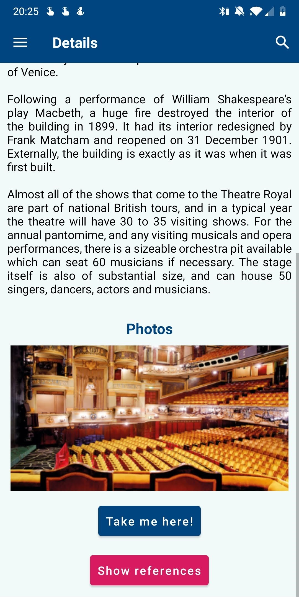
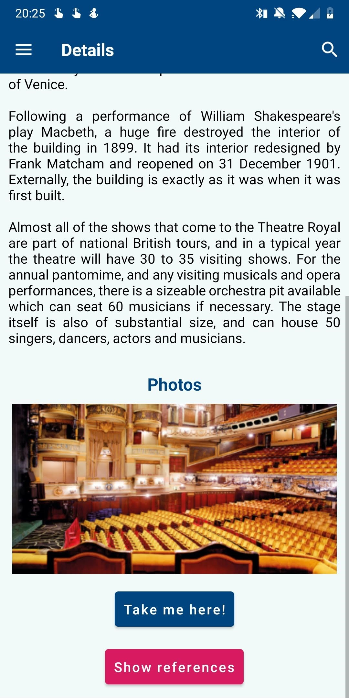

Welcome to Northumberland
We have developed an Android app to aid tourists and architectural enthusiasts easily find places to visit in the Northumbria area. The app shows the location of buildings in relation to the users location and provides the ability to learn about these buildings in the app with information and pictures, aswell as by being able to get directions to them.

The Map
The map screen is the main page of the app and is similar to any other map application allowing it to feel familiar and simple to use. You can tap on a pin to view the name of it, a brief summary and an image of the location, furthermore you can get directions to the location (this will open google maps externally).
Searching for a Location
The intuitive search screen allows for a user to easily view information about nearby locations and their distance to them. If the user only wants to view locations up to a certain distance from their location then they can use the slider at the top to achieve this. The checkboxes at the top allow for further refinement of the search, such as only showing places that are child or wheelchair friendly.
There are many ways the search bar can be used, for example one of the ways is to search by tags attached to each location to only see things that fit the type of location a user wants to visit (location type: castle, theatre, etc).
Locations
The location page is where a user can view all the information about a location, including:
- All of its tags
- The year it was made
- How many likes it has from other users
- An in depth explanation of the location
- A slideshow of images showing off the location
- And a map which allows you to get directions to the location.
 

Timeline
The timeline screen allows easy viewing of locations by date, allowing a user to see which are the oldest or most recent locations. Depending on which way round you want to view the locations, it is easy to change with the dropdown menu at the top. The intuitive yet elegant slider at the bottom of the screen allows you to easily go through the locations by the year they were made in.

Settings
By storing users preferences in a settings file, we allow for consistent use of the app each time it is opened. This allows us to have incorporated several ease of use features, such as:
- Being able to edit the font size in the app
- The colour combinations for people who struggle or are colourblind
- Finally by having the option for text to speech